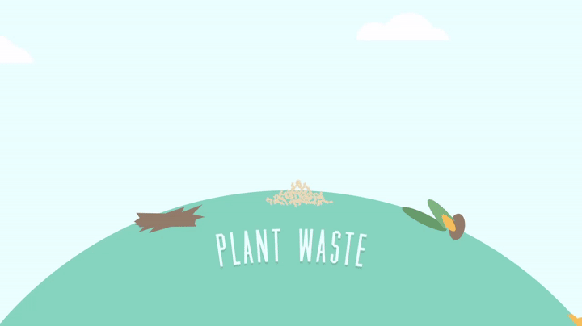

Биоенергија се однесува на енергијата која произлегува од биолошки процеси или од биолошки организми. Биоенергетика, што е истражување на начинот на кој живите ќелии и организми примаат, трансформираат и користат енергија. Ова вклучува процеси како гликолиза, циклусот на Кребс, и фосфорилација на оксидација на електронски преносни ланци во ќелиите; Биогорива, што е производство енергија од обновливи извори, како што се биомаса, биогас, биодизел и други производи добиени од биолошки материјали. Биогоривата се користат за производство електрична енергија или како замена за традиционални горива.
